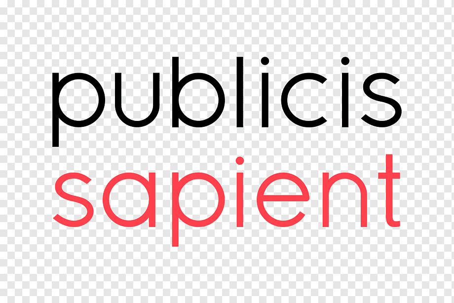

About
Full Stack Machine Learning Engineer
I am a highly motivated computer science graduate with a specialized focus on Machine Learning from George Mason University. My true passion lies in leveraging technology to solve real-world challenges and create a positive impact on a global scale. I'm on a relentless journey of self-improvement, embracing challenges, and making high-quality decisions. With a motto of "Embracing Change with Technology," I continuously seek opportunities to drive innovation and make a meaningful difference in the society we live in. My journey in software engineering has been a thrilling quest, where I find joy in coding and unraveling complex problems. In the realm of software engineering, I crack the code with passion, crafting solutions that resonate. Adapting swiftly, I delight stakeholders, prioritizing their needs. Armed with data-driven judgment and a storyteller's flair, I present grand ideas with finesse and pizzazz.
Empowering change with technology, where ideas thrive through action.
Areas of Interest
Software Development | Application Development | Product Development | SaaS | Cloud | Agile Development | Content Management Platforms (CMS) | Data Mining | Machine Learning | Artificial Intelligence | Adobe Experience Manager (AEM) | Web Development | DevOps |Skills
Resume
MS CS GMU | PSM-I | SDE | ML | POLYGLOT PROGRAMMER | EXUBERANT LEARNER
Education
Master of Science in Computer Science (Concentration in Machine Learning)
2021 - 2023
 George Mason University, VA, USA
George Mason University, VA, USA
Courses: Data Mining, Natural Language Processing, Artificial Intelligence, Machine Learning, Mining Massive Datasets, etc
Distinguished Academic Achievement Award - GPA: 4.0 out of 4.0
Bachelor of Technology - Electronics and Communication Engineering
2013 - 2017
 National Institute of Technology (NIT), Jalandhar, India
National Institute of Technology (NIT), Jalandhar, India
Courses: Operating Systems, Data Structures, Digital Electronics, Neural Networks, Signal Processing, Microprocessor, etc
Professional Experience
Software Engineer
July 2022 - Present
Nodal Exchange, Tysons Corner, Virginia, USA
- Led collaborative efforts within the Treasury Team to identify and address critical software requirements, instrumental in the successful implementation of key features and functionalities for the Nodal Exchange system.
Software Engineering Intern
May 2022 - Aug 2022
Google, Mountain View, California, USA
- Contributed to the development of Chrome OS, resulting in a reduction of application crashes on Chromebooks.
- Developed customized dashboards for tracking and analyzing live crashes.
- Categorized crashes and performed log analysis using various machine learning techniques. Improved crash classification by 40% through the implementation and improvement of classification algorithms.
Application Developer 2
May 2020 - Aug 2021
 Oracle,Hyderabad, India
Oracle,Hyderabad, India
- Delivered and implemented product enhancements for the Oracle Procurement Cloud Sourcing team. Assisted in resolving complex issues and realizing customer enhancement requests.
- Involved in the design, development, and debugging of a procurement application. Provided post-implementation support, application development, and maintenance using Oracle ADF.
- Extensively programmed using PLSQL and SQL queries and designed a highly efficient database for the product.
- Designed UI pages utilizing ADF Rich Faces components for custom features such as award analysis tools, etc.
- Developed APIs for creating, viewing, and managing cloud-stored data using REST and SOAP APIs, and handling data in formats such as JSON, XML, and CSV.
- Conducted analysis and performance tuning of SQL queries and procedures, leading to a 80% increase in query efficiency.
Associate Technology L2
Dec 2017 - May 2020
 Publicis Sapient,Gurgaon, India
- Managed the technical delivery of custom development, integration, and data migration aspects of an AEM implementation within an agile, rapid development, and prototyping environment.
- Implemented several customized and intricate features using jQuery and Java.
- Created a distinctive admin tool that enabled the generation, storage, and integration of various types of data with multiple databases, and provided the ability to seamlessly switch on and off features. Resulting in a 95% increase in productivity and a reduction of rework.
- Developed and maintained Microservices APIs using spring boot, PostgreSQL, Redis, Docker, and AWS EC2.
- Developed an automated framework for load and performance testing using Gatling, and integrated it with the AWS deployment pipeline. Possessed expertise in performance testing using tools like JMeter, Gatling, and Tough Day 2
- Extensively utilized groovy scripts to diagnose and resolve bugs in the AEM content structure.
- Implemented and set up the monitoring tool Splunk for tracking logs and maintaining code quality through the use of SonarQube and JUnits.
- Enhanced the website's search functionality for increased reach and precision in results with 90% accuracy.
- Implemented SSO (Single Sign-on) by integrating Customer identity and access management (CIAM).
- Received the "Client Focused Delivery" award twice for key project deliveries.
Software Development Engineer Intern
Jun 2016 - July 2016
EKO India Fin Services,Gurgaon, India
- Worked at a startup dedicated to resolving the issue of money transfer for migrant workers to their rural homes. I was involved in the following areas:
- Developed features for the customer application "EKO" based on Google Polymer. Conducted research and created multiple components including a Walk-Through Tour and Notification Elements.
- Improved the EKO Blog system by designing and integrating new components into the custom template and multiple EKO websites.
Github Link
Projects
BitTales
NLP | Full-Stack Development
Leveraged Natural Language Processing (NLP) algorithms to transform conversations between elderly individuals and children into personalized bedtime stories, fostering intergenerational learning, emotional growth, and enhancing the storytelling experience with NLP-based voice cloning technology.
Bitcamp 2023 Winning Project
- Cockroach Labs - Best Use of CockroachDB Serverless
- Best Machine Learning Hack
Rescue Safe
Full-Stack Development
Rescue Safe is a Progressive Web App (PWA) that harnesses crowdsourced intelligence to provide real-time updates on location-based safety information. Users can share details about themselves and their surroundings, mark their safety status, and request evacuation support. The app's versatile backend APIs offer potential for various use cases beyond crisis situations, making it a valuable tool for enhancing safety and navigation in different scenarios.
PatriotHacks 2022 Winning Project - Microsoft Humanitarian Aid Track
Timelyx
Full-Stack Development | Machine Learning | IOT
Timelyx is a transformative Progressive Web App (PWA) utilizing IoT with infrared sensors and Arduino Nano 33 IoT microcontroller for real-time data collection. Powered by Machine Learning, it optimizes student time by suggesting locations and activities between classes, while implementing DevOps and Kubernetes for scalable deployment and AES-128 bit encryption for enhanced security.
HooHacks 2023
Survey Application
Full-Stack Development | AWS
The Angular-SpringBoot-SurveyPage application is a web-based student survey platform built using Spring Boot, CockroachDB, and Angular. It leverages microservices architecture on Kubernetes to ensure scalability and resilience for the containerized application.
AdTracking Fraud Detection
Big Data
Developed a pipeline and machine learning engine that accurately identified fraudulent clicks (95%) from a massive and skewed data set of 7.54GB, considering factors such as click time and IP address, using PySpark.
Github Link
Myers–Briggs Type Indicator (MBTI) Classification using Text data
Machine Learning
Developed a system for multi-label text classification in NLP to determine users' personalities based on the MBTI scale by analyzing their tweets. This approach was faster than filling out a questionnaire, and a web application was created to gather tweets and predict personality types.
Github Link
Exploring Data Mining Using Mini Projects
Machine Learning
Worked on several data mining projects to gain mastery of fundamental concepts and apply them to different data sets, including classification of movie reviews through text classification, clustering of IRIS and image datasets, credit risk scoring for loan approvals, and a movie recommendation system.
Github Link
Automatic Gatling
DevOps
Constructed an automated load and performance testing framework with the capability to configure the main URL of the website, number of users, context URLs, and response times that fall within specific parameters. The framework generates graphical representations and presents vital statistics.
Medium Link
Internationalization Message Management Portal (i18n)
Full-Stack Development
Built a dynamic extensible framework to maintain keys and values in different languages for various custom IOS/Android/Web applications, publish them to a database using a CRON based scheduler or UI, and also maintained a copy as a JSON locally using Java, jQuery, jquery-confirm.js for popups, Bootstrap, other UI frameworks.
Alcohol Detection and Accident Prevention Technology
Internet of Things (IoT)
Built a non-invasive technology (IoT) that quickly and precisely determines the driver’s Alcoholic level by analyzing the breath of the driver. Real-time location detection and intimation by short message service to the SOS contacts of the driver and nearest hospitals. Saving the data in the database of the location for future applications.